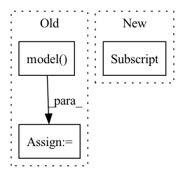

Pattern ID :2294

Before Change
@override(ModelV2)
def forward(self, input_dict, state, seq_lens):
model_out, _ = self.model(input_dict, state, seq_lens)
return model_out, []
After Change
@override(ModelV2)
def forward(self, input_dict, state, seq_lens):
return input_dict["obs_flat"].float(), state
In pattern: SUPERPATTERN
Frequency: 3
Non-data size: 3
Instances
Fragment ID: 7949097
Project Name: replicable-marl/marllib
Commit Name: d339c3de863e3cae6fbfe67e503ff0953e2cd868
Time: 2022-03-03
Author: hhhusiyi@163.com
File Name: MetaDrive/model/torch_maddpg.py
M Class Name: MADDPGTorchModel
N Class Name: MADDPGTorchModel
M Method Name: forward(4)
N Method Name: forward(4)
M Parent Class: nn.Module,TorchModelV2
N Parent Class: nn.Module,TorchModelV2
M File Name: MetaDrive/model/torch_maddpg.py
N File Name: MetaDrive/model/torch_maddpg.py
M Start Line: 241
M End Line: 242
N Start Line: 238
N End Line: 238
'>
Before Change
if self.with_preprocess:
x = x[:,[2,1,0],...]
x = x * (1/255)
x, _ = self.model(x)
x = self.end2end(x)
return x
After Change
x = x[:,[2,1,0],...]
x = x * (1/255)
if isinstance(x, list):
x = x[0]
else:
x = x
x = self.end2end(x)
return x
'>
Fragment ID: 7949098
Project Name: meituan/yolov6
Commit Name: 16301c059d2305b12e66531defdf07413108f651
Time: 2022-09-13
Author: 108787191+shensheng272@users.noreply.github.com
File Name: yolov6/models/end2end.py
M Class Name: End2End
N Class Name: End2End
M Method Name: forward(2)
N Method Name: forward(2)
M Parent Class: nn.Module
N Parent Class: nn.Module
M File Name: yolov6/models/end2end.py
N File Name: yolov6/models/end2end.py
M Start Line: 257
M End Line: 258
N Start Line: 257
N End Line: 262
'>
Before Change
@override(ModelV2)
def forward(self, input_dict, state, seq_lens):
model_out, _ = self.model(input_dict, state, seq_lens)
return model_out, []
After Change
@override(ModelV2)
def forward(self, input_dict, state, seq_lens):
return input_dict["obs_flat"].float(), state
'>
Fragment ID: 7949100
Project Name: replicable-marl/marllib
Commit Name: d339c3de863e3cae6fbfe67e503ff0953e2cd868
Time: 2022-03-03
Author: hhhusiyi@163.com
File Name: MPE/model/torch_maddpg.py
M Class Name: MADDPGTorchModel
N Class Name: MADDPGTorchModel
M Method Name: forward(4)
N Method Name: forward(4)
M Parent Class: nn.Module,TorchModelV2
N Parent Class: nn.Module,TorchModelV2
M File Name: MPE/model/torch_maddpg.py
N File Name: MPE/model/torch_maddpg.py
M Start Line: 237
M End Line: 238
N Start Line: 234
N End Line: 234